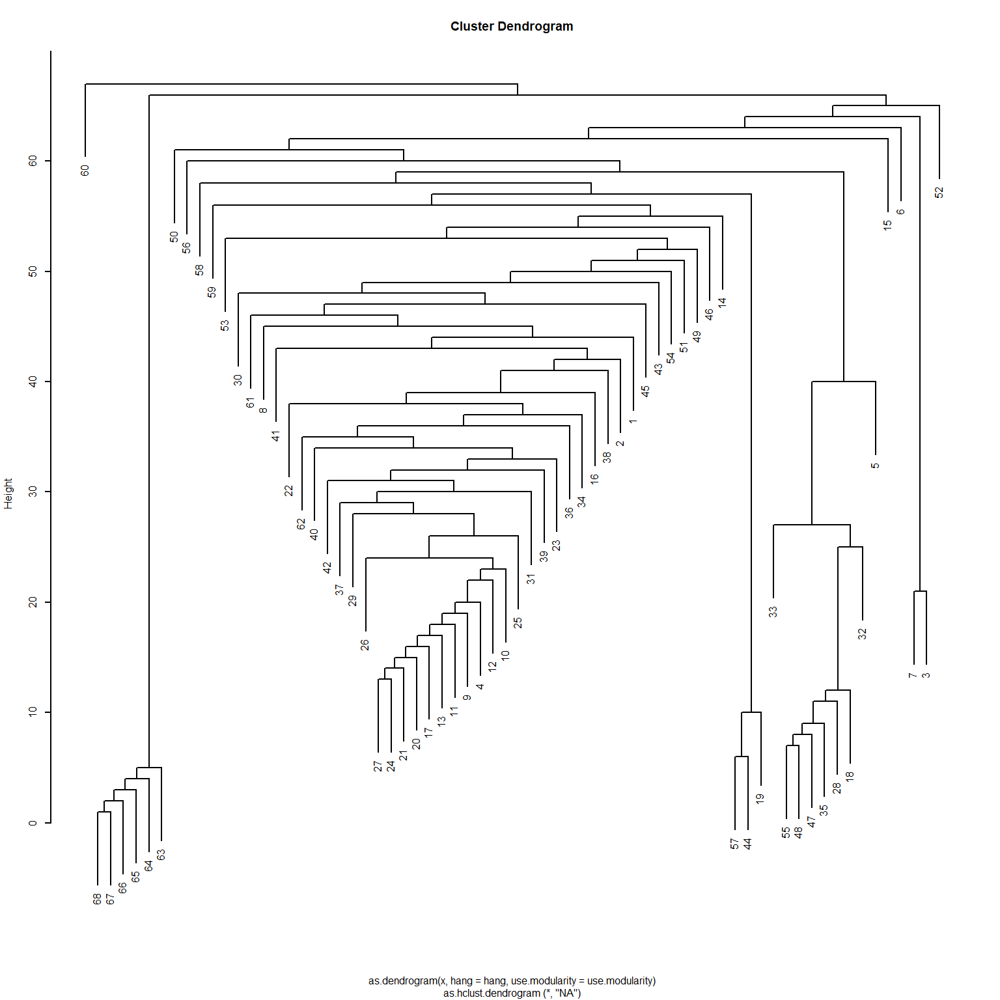
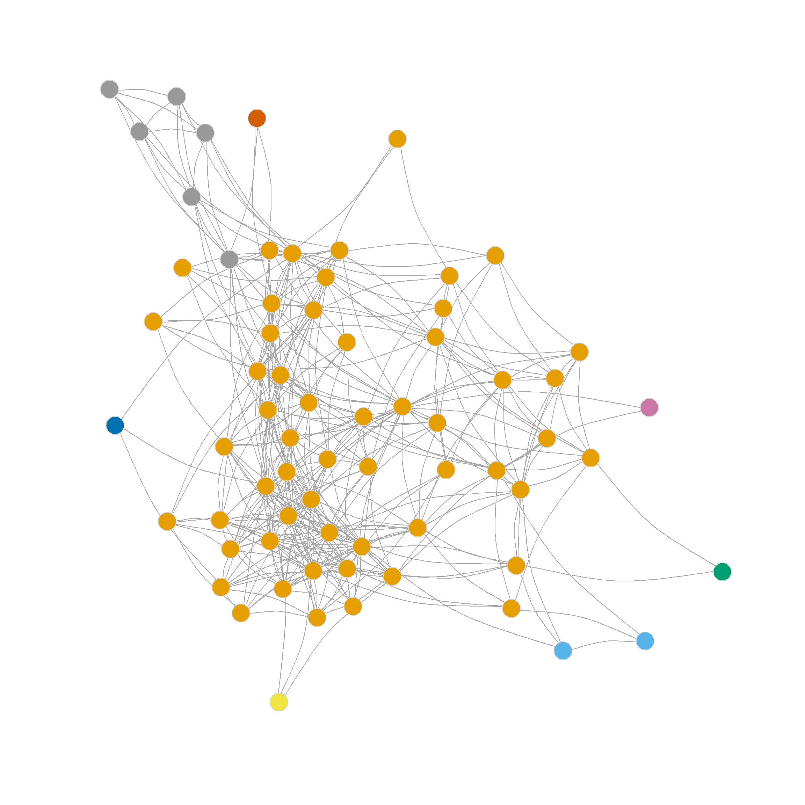
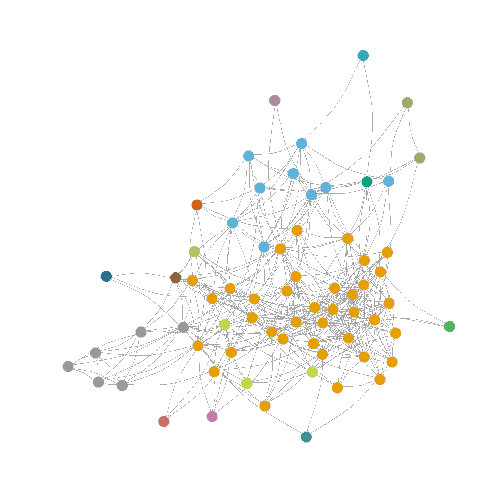
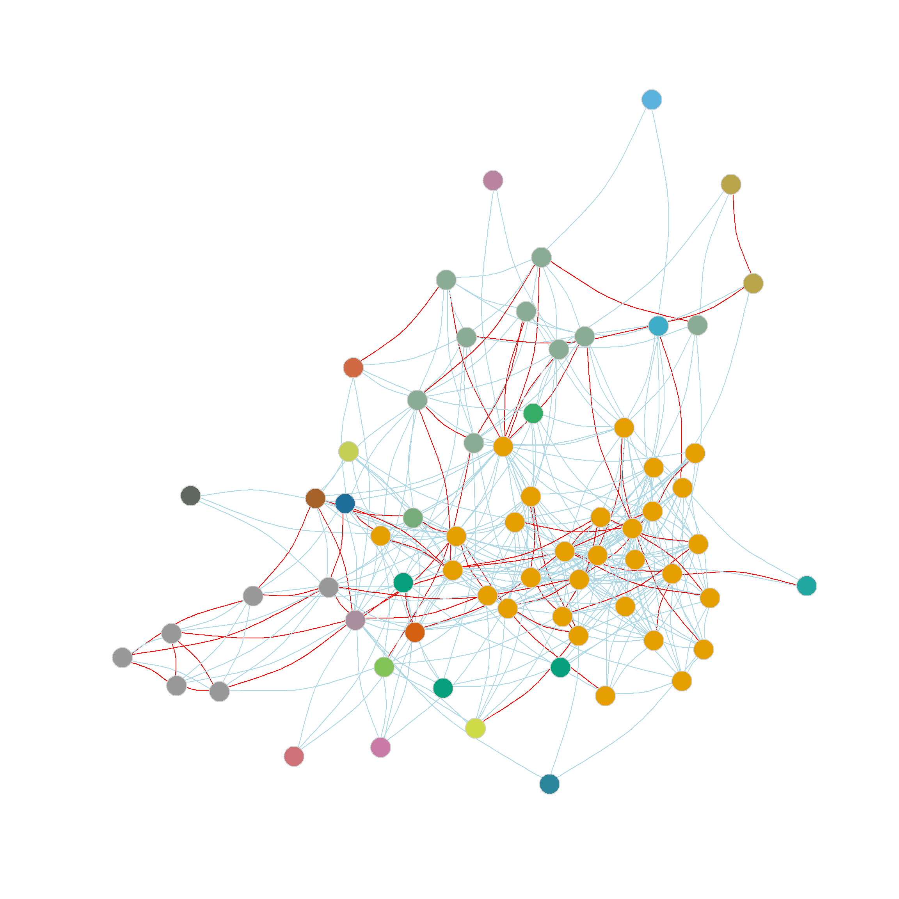
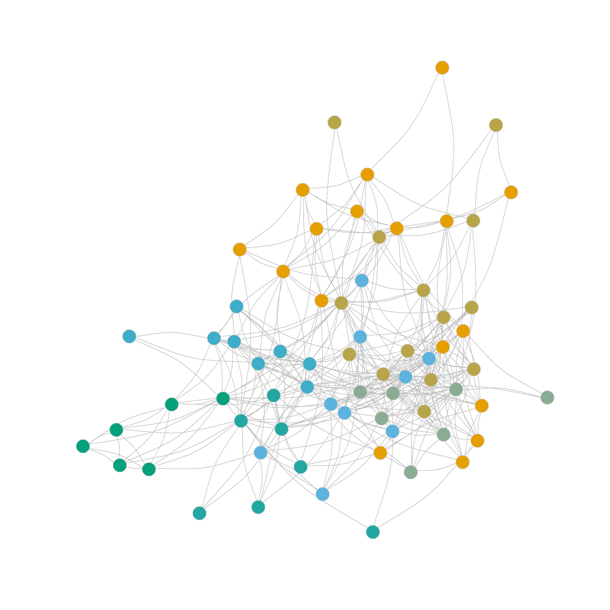

Finding Communities via Edge-Deletion
Community Detection Using Edge-Betweenness
Another approach to community detection with good sociological bona fides relies on edge betweenness, a concept we covered on the lecture notes on betweenness centrality. An edge has high betweenness if many other pairs of nodes need to use it to reach one another via shortest paths.
It follows that if we iteratively identify high betweenness edges, removing the top one, recalculate the edge betweenness on the resulting edge-deleted subgraph, and remove that top one (or flip a coin if two are tied), we have an algorithm for identifying communities as those subgraphs that end up being disconnected after removing the bridges (Girvan and Newman 2002). Note that, like the leading eigenvector method, this approach is divisive with all nodes starting in a single cluster, then that cluster splits into two, and so forth.
For instance, the function below implements a simple version of the Girvan-Newman edge-betweenness community partition algorithm.
The function takes two inputs: some graph h and the number of community partitions desired c. Line two initializes the counter d which keeps track of the number of components in the graph (the number of disconnected clumps). Then we enter a while loop on lines 3-11. In line 4 we compute the edge betweenness of each edge in the graph (using the igraph function edge_betwenness), line 5 checks to see which one is the biggest, and lines 6-7 are designed to keep a random one in case of a tie (hence we need to set the seed for reproducibility). Line 8 deletes the selected edge, line 9 computes the number of components in the graph (using the igraph function components which returns a list of results), and line 10 sets the value of d to the number of components in the new edge-deleted subgraph (stored in the object comp$no). The while loop stops when the number of components comm$no is equal to the function argument c. Line 12 returns a vector of community membership assignments.
And here’s the function in action in the law firm friendship nomination network, requesting a partition into eight groups:
library(networkdata)
library(igraph)
g <- law_friends
g <- subgraph(g, degree(g) >= 2)
ug <- as_undirected(g, mode = "collapse")
c8 <- eb.comms(ug, c = 8)
c8 [1] 1 1 2 1 1 3 2 1 1 1 1 1 1 1 4 1 1 1 1 1 1 1 1 1 1 1 1 1 1 1 1 1 1 1 1 1 1 1
[39] 1 1 1 1 1 1 1 1 1 1 1 5 1 6 1 1 1 1 1 1 1 7 1 1 8 8 8 8 8 8We can check the modularity of this partition using the igraph function modularity.
The resulting partition is shown in Figure 2 (a)
Note that edge betweenness provides a different picture of the network’s community structure than the eigenvector-based partitioning method. This is not surprising, as it is based on graph-theoretic principles rather than null-model principles such as modularity. The picture here is of two broad communities (in the middle) surrounded by many smaller islands, including some singletons.
In this respect, we can see that the edge-betweenness algorithm begins by selecting the edges, separating pendant nodes and other peripheral nodes into their own communities, which makes sense, since these are the easiest to disconnect (and the edges connecting them to the graph have the highest betweenness). To reach the “middle” or core of the graph, we need to request a partition into more communities. Figure 2 (b) shows the result of using the eb.comms function above to partition the network into sixteen communities. Which looks a bit better, uncovering some actual groups of nodes in the periphery of the network that nominate one another as friends.
Combining Modularity Maximization and Edge-Betweenness
Of course, it is possible to combine the modularity maximization idea with the edge-betweenness partition idea. This is helpful because we usually do not know the actual number of communities in the network; we want the algorithm to tell us. So the trick is to modify the function eb.comms above to compute the modularity of a given partition at each step and record it in a vector. That way, we can pick the biggest number after going through all of the edges.
A function that does that looks like this:
eb.comms2 <- function(h, s = 123) {
k <- 1 #initializing counter
qv <- 0 #initializing modularity vector
C <- list() #initializing membership vector list
E <- ecount(h) #number of edges
og <- h
while(k < E) { #do until there are no more edges to delete
eb <- edge_betweenness(h, directed = FALSE) #computing edge betweenness
e <- which(eb == max(eb)) #grabbing top betweenness edges
set.seed(s) #setting seed
if(length(e) > 1) {e <- sample(e, 1)} #grabbing an edge at random in case of tie
h <- delete_edges(h, e) #deleting top betweenness edge
comp <- components(h) #computing number of components of edge-deleted graph
C[[k]] <- comp$membership #creating new community membership vector based on component membership
qv[k] <- modularity(og, comp$membership, directed = FALSE) #recomputing modularity of original graph
k <- k + 1 #increasing counter
}
maxqpos <- min(which(qv == max(qv))) #picking partition with maximum modularity
q <- qv[maxqpos] #picking partition with maximum modularity
membership <- C[[maxqpos]] #picking membership vector with maximum modularity
nc <- max(membership)
return(list(q = q, nc = nc, membership = membership))
}The main additions here are lines 14 and 15. Line 14 puts the membership vector for the components of the graph in a list object called C at each step (the list is initialized to an empty list in line 4). Line 15 computes the modularity (using the igraph function modularity) on the original graph (not the vertex-deleted one), called og (get it?) initialized in line 6, but using the membership vector from the components of the vertex-deleted subgraph at a given step as community assignments. After the while loop ends (going through all the edges), lines 18-21 grab the community assignments corresponding to the maximum number stored in the modularity vector qv, and line 22 returns the membership vector, a scalar recording the number of communities (the maximum number in the membership vector), and the modularity value as a list object.
Let’s see the new and improved algorithm in action:
$q
[1] 0.2078357
$nc
[1] 23
$membership
[1] 1 1 2 1 3 4 2 1 1 1 1 1 1 5 6 1 1 3 7 1 1 1 1 1 1
[26] 1 1 3 1 8 1 3 3 1 3 1 1 1 1 1 1 1 9 7 10 11 3 3 12 13
[51] 14 15 16 17 3 18 7 19 20 21 22 1 23 23 23 23 23 23Which tells us that the optimal partition according to the edge betweenness is one that splits the graph into 23 communities, with a maximum modularity of Q = 0.208.
Of course, all of these steps are packaged in the igraph function called cluster_edge_betweenness. Let’s see how that works.
Note that the cluster_edge_betweenness function takes a graph as input. We have to tell it that is an undirected graph by setting the argument directed to FALSE.
And as we can see, the results are exactly the same we obtained earlier, dividing the nodes in the network into 23 communities. :
[1] 1 1 2 1 3 4 2 1 1 1 1 1 1 5 6 1 1 3 7 1 1 1 1 1 1
[26] 1 1 3 1 8 1 3 3 1 3 1 1 1 1 1 1 1 9 7 10 11 3 3 12 13
[51] 14 15 16 17 3 18 7 19 20 21 22 1 23 23 23 23 23 23Interestingly, even though the Girvan-Newman approach is clearly a divisive algorithm, the results can be presented as a dendrogram, but storing top-down divisions rather than bottom-up merges. This is shown in Figure 1

Another thing we can do with the edge_betweenness function output is highlight the edges identified as bridges during the divisive process, since this information is stored in the bridges object. We can use this vector of edge ids to create an edge color vector that will highlight the bridges in red. This is shown in Figure 2 (d).
Finding Communities Using the Edge-Clustering
Radicchi et al. (2004) propose another version of an edge-deletion approach to community detection based on what they call the edge clustering coefficient (\(e_{cc}\)). This is essentially a measure of the extent to which an edge connects nodes who themselves share a lot of neighbors, normalized by the minimum of the degrees of the nodes minus one:
\[ e_{cc} = \frac{z_{ij} + 1}{min((k_i - 1), (k_j - 1))} \tag{1}\]
Where \(z_{ij}\) is the number of common neighbors shared by \(i\) and \(j\) and \(k_i\) and \(k_j\) are their respective degrees. Radicchi et al. (2004) add one to the numerator of Equation 1 to account for the fact that some connected nodes may not share any neighbors.
Here’s a function to compute the edge clustering coefficient as defined by Radicchi et al. (2004):
This function takes some graph h as input and returns a vector of length \(|E|\) containing the clustering coefficient of each edge. Note that we compute the number of shared neighbors by taking the second power of the adjacency matrix in lines 4 and 5. The for loop goes through each edge and computes the clustering coefficient in line 11.
And here’s a modification of our edge-deletion function above to incorporate the edge clustering:
eb.comms3 <- function(h, s = 123) {
k <- 1 #initializing counter
qv <- 0 #initializing modularity vector
C <- list() #initializing membership vector list
E <- ecount(h) #number of edges
og <- h
while(k < E) { #do until there are no more edges to delete
ec <- edge.clust(h) #computing edge clustering coefficient
e <- which(ec == min(ec)) #grabbing minimum clustering edge
set.seed(s) #setting seed
if(length(e) > 1) {e <- sample(e, 1)} #grabbing an edge at random in case of tie
h <- delete_edges(h, e) #deleting minimum clustering edge
comp <- components(h) #computing number of components of edge-deleted graph
C[[k]] <- comp$membership #creating new community membership vector based on component membership
qv[k] <- modularity(og, comp$membership, directed = FALSE) #recomputing modularity of original graph
k <- k + 1 #increasing counter
}
maxqpos <- min(which(qv == max(qv))) #picking partition with maximum modularity
q <- qv[maxqpos] #picking partition with maximum modularity
membership <- C[[maxqpos]] #picking membership vector with maximum modularity
nc <- max(membership)
return(list(q = q, nc = nc, membership = membership))
}And here are the results for the law_friends network:
$q
[1] 0.2546558
$nc
[1] 7
$membership
[1] 1 1 1 1 2 1 2 3 2 3 2 3 3 1 3 1 4 1 1 2 2 1 2 2 2 4 2 1 3 4 2 1 2 4 1 4 3 4
[39] 2 5 5 4 4 6 4 5 1 1 5 6 5 5 5 6 1 1 6 6 6 2 6 5 7 7 7 7 7 7Which suggests a partition into seven communities with a modularity score of 0.255 outperforming the best edge-betweenness partition by this metric. Figure 2 (e) shows the resulting communities obtrained from the edge-clustering approach.




